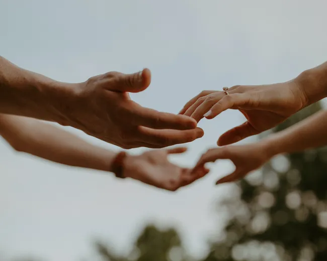
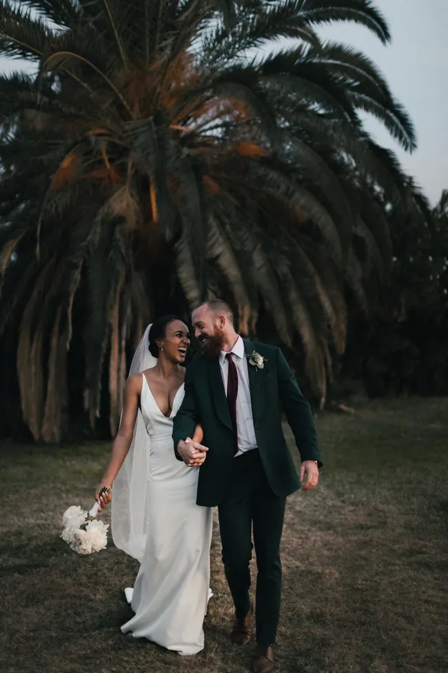
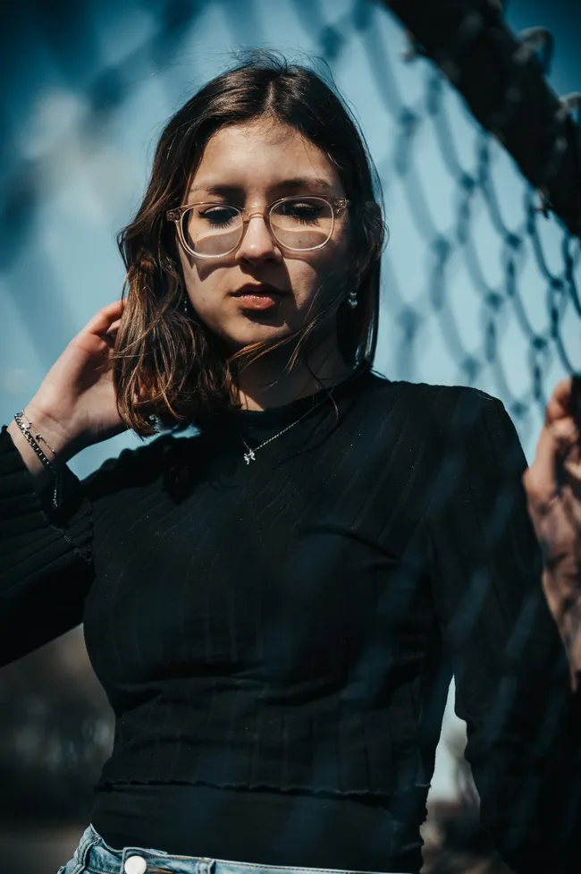
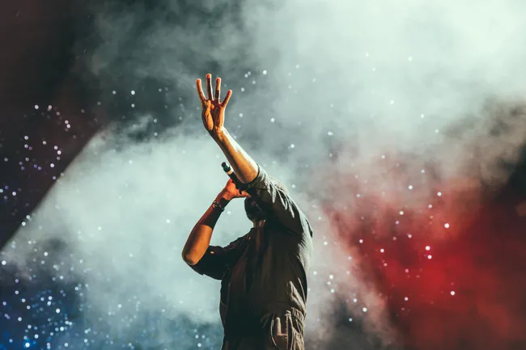
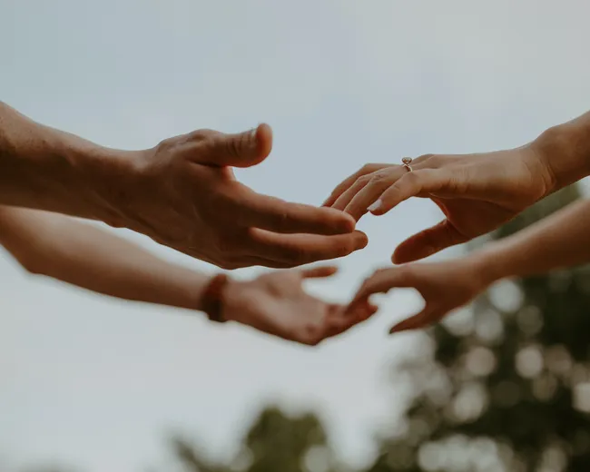
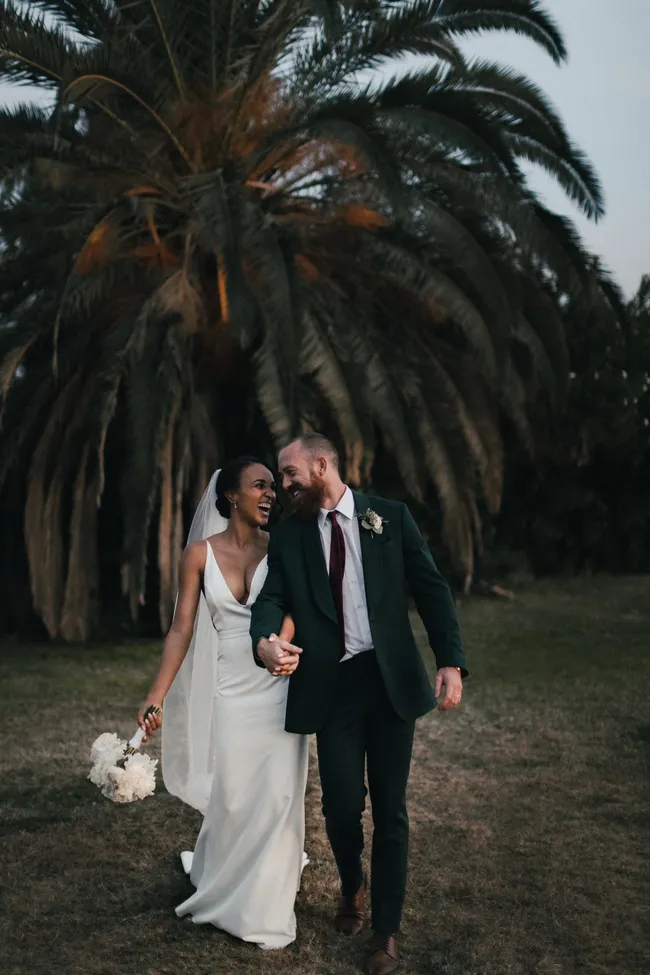
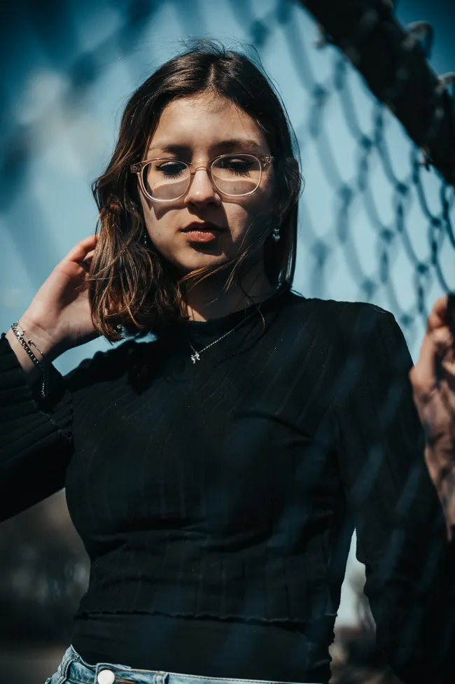
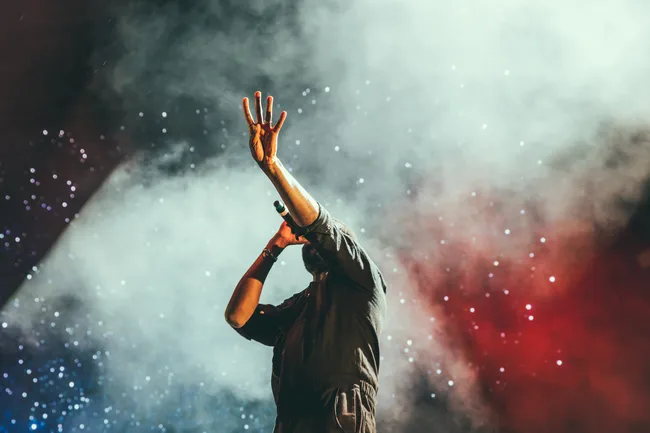

Nina Carducci, un regard créatif sur vos moments uniques
Devenir photographe était pour moi une évidence. Comme si j’y étais prédestiné. Saisir un moment, une émotion, une situation, un endroit, une lumière et les rendre immortels, voilà ce qui me fait vibrer.
Photographe professionnelle à Bordeaux, je me spécialise dans les mariages, portraits, événements et concerts. Que ce soit pour un portrait pro ou un reportage photo, je m'engage à capturer chaque émotion avec créativité. Je propose également des séances en extérieur ou en studio, des retouches soignées, et la création d'albums personnalisés. Contactez-moi pour un devis gratuit et découvrez comment immortaliser vos plus beaux moments.
Envie d'en savoir plus ? Découvrez tous mes services ou contactez-moi dès aujourd'hui pour un devis gratuit.
 






